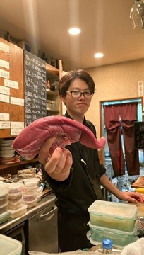

饗応元では毎月29日限定で、黒毛和牛を主役にした特別コース「肉会」を開催しています。ふだんの饗応元は旬の魚や馬刺しを中心とした一皿と日本酒のペアリングが軸ですが、この日だけは店主自らが目利きした黒毛和牛が主役になります。今回はその内容を写真とともにご紹介します。


炙りから握りまで、様々な形で
肉会の黒毛和牛コースでは、炙りや握り、旬野菜と合わせたサラダ仕立てなど、様々な形で黒毛和牛をお楽しみいただけます。


コース内容とご予約
黒毛和牛コースは10,500円（コース料金のみの価格で、ドリンク代は別途）。日本酒をはじめワイン・焼酎・ノンアルコールドリンクまで幅広くご用意しており、酒匠が選ぶ一杯と合わせてお楽しみいただけます。14席の隠れ家空間のため、事前のご予約をおすすめしております。開催日の詳細・空席状況はWEB予約ページ、またはお電話（075-600-0511）にてお気軽にお問い合わせください。最新情報はInstagram（@kyouou.hajime）でも発信しております。
詳しくは肉会ページもあわせてご覧ください。